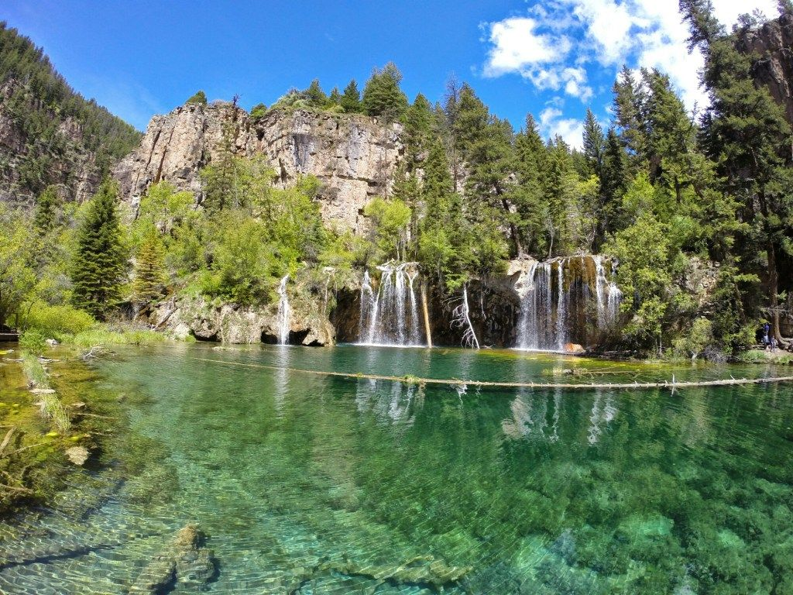
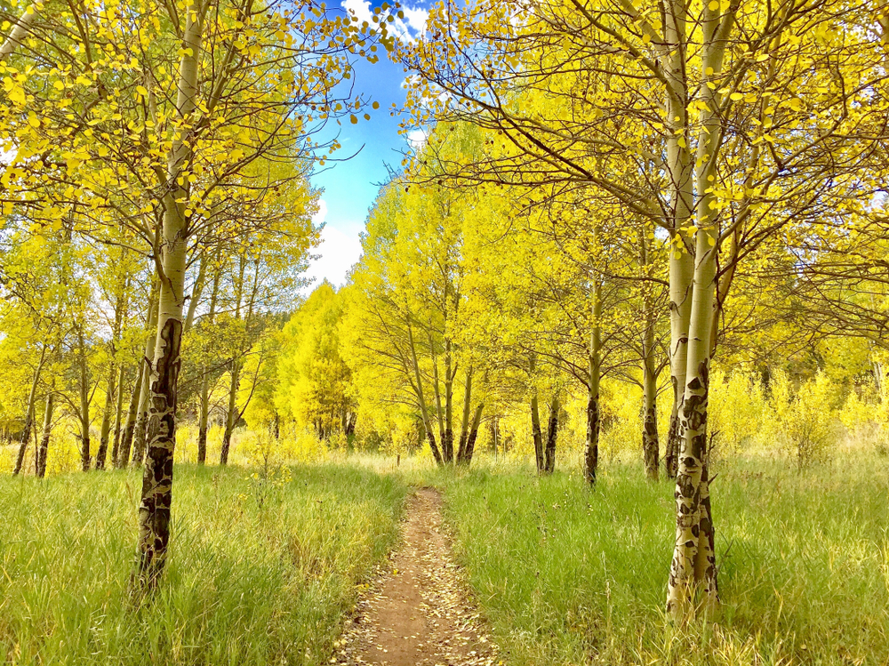
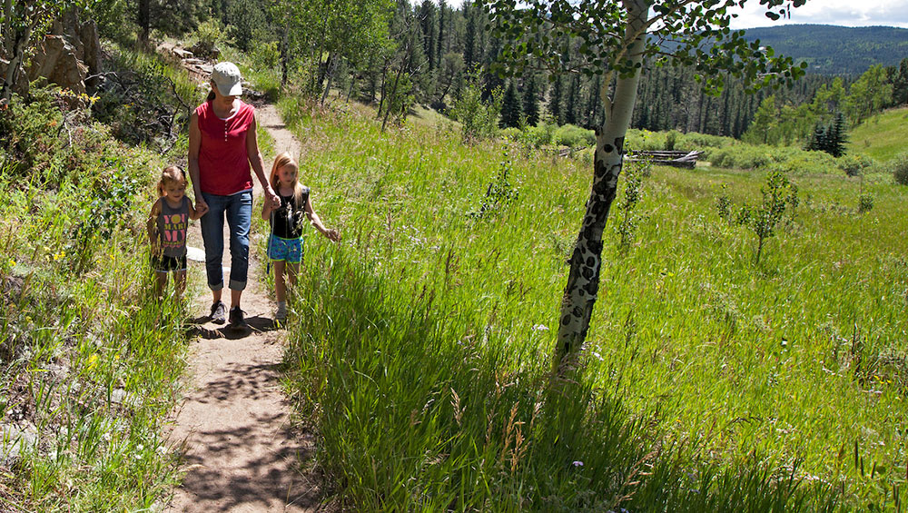
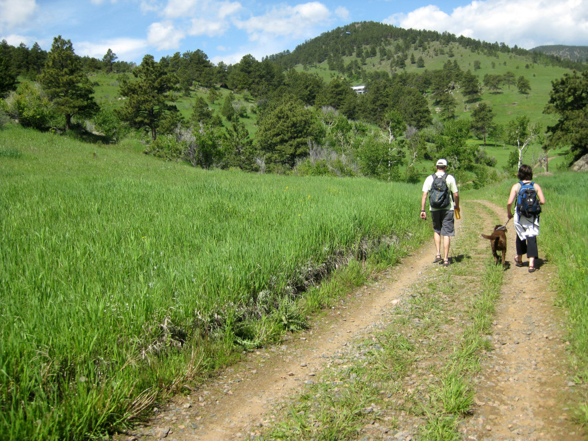
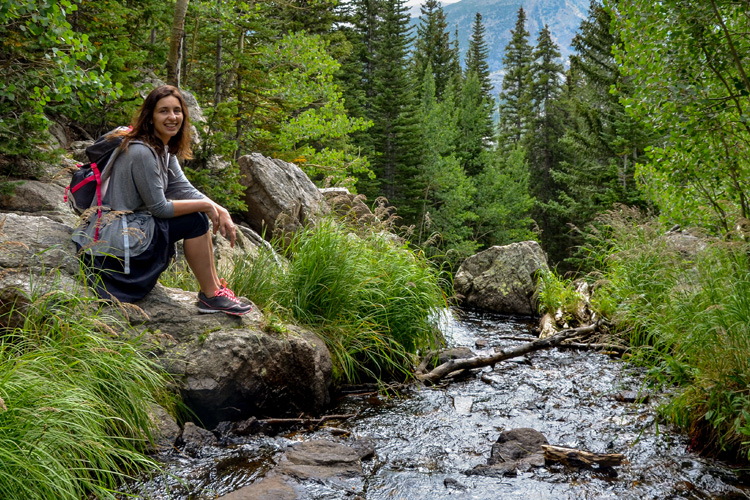

Golden Gate Canyon State Park encompasses over 12,000 acres of forest, with rocky peaks, aspen meadows. This 11,998-acre Front Range park established in 1960 has campgrounds, picnic areas, and 36 miles of hiking trails for hiking, horseback riding, mountain biking and offer the snow lover ample opportunities for outdoor recreation such as cross-country skiing, snowshoeing, sledding, ice fishing and ice skating.
Only 30 miles from Denver, this Colorado State Park makes for a great weekend trip...


Life Outside:
With more than 23 million acres of public land, Colorado is an outdoor enthusiast's paradise.
Whether you are looking to get outside and go camping, reserve a hunting area, visit a park, get your hunting or fishing license,
or apply for a draw, Colorado Parks and Wildlife has what you need for the perfect outdoor experience.
Join us !



Trails:
There are 11 trails in Golden Gate, visiters can choose anyone to enjoy.
Learn more